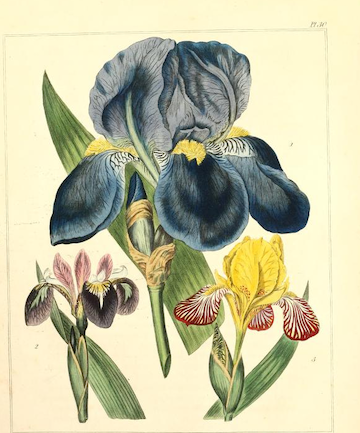
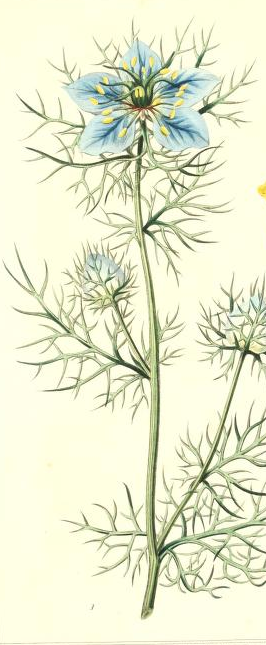

-
1. Delphinium
Heavenly
"No-one will remember our work. Our lives will run like sparks through the stubble. I place a delphinium, blue, upon your grave" -Derek Jarman, "Blue" (1993)

-
2. Gentian
Sweet Dreams
"Beside the brook and on the umbered meadow,/Where yellow fern-tufts fleck the faded ground,/With folded lids beneath their palmy shadow/The gentian nods in dewy slumbers bound." -Sarah Helen Williams, "A Still Day in Autumn"

-

3. Iris
Faith, Authority, Protection from Evil Spirits
"What in your life is calling you,/When all the noise is silenced,/The meetings adjourned...The lists laid aside,/And the Wild Iris blooms/ By itself in the dark forest.../What still pulls on your soul?" -Rumi
The Iris can grow in a variety of shades, from the blue depicted here to yellow, purple, and silvery white. Some speculate these multi-colored shades give the iris its name; Iris, or the messenger of the gods, made her journeys across rainbows that tracked all over the sky. Mythologically, Iris has been associated with guiding the spirits of women and girls to the underworld, which is why many graves of women are decorated with irises in Greece today.
-
4. Jacob's Ladder
Please Come Down
Quote about first flower

-

5. Love-in-the-Mist/Devil-in-a-Bush
You Puzzle Me
Also called the Nigella flower, Love-in-the-Mist or Devil-in-a-Bush invoked a feminine figure with loose hair in antiquity; this is why its colloquial names carry a certain romantic connotation. On the other hand, however, gifting a Nigella bloom to another began to signify a wish to be left alone by the Middle Ages, which is where the flower's negative symbolism and names come from. Ultimately, Love-in-the-Mist's legacy is one of love, though usually unhappy love or unrequited love.
Love-in-the-Mist also carries a medicinal legacy, as many would use its black seeds to relieve muscular spasms and pain and also to sedate those in pain. Where Nigella bloomed in the wild, it was considered a particularly useful weed that, when burned, kept vermin at bay and was generally acknowledged to protect against the banal interference of worms, fleas, and gnats.